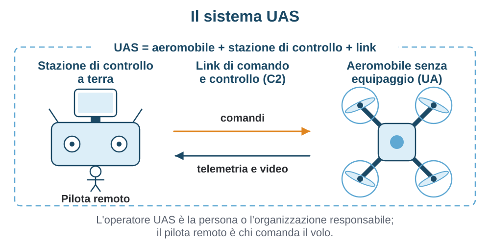
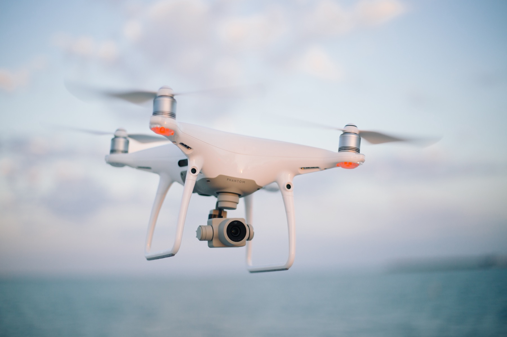
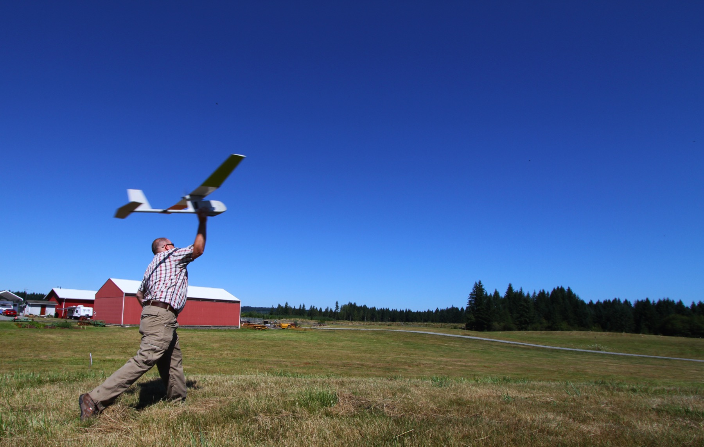

Cos'è un drone
Prima di parlare di eliche, radio e regolamenti conviene mettersi d'accordo sulle parole. Qui trovi che cosa è davvero un drone, da dove arriva, come si dividono le famiglie di macchine e perché la massa al decollo decide quasi tutto il resto.
- Una definizione che regge
- Da dove vengono
- Le famiglie
- A cosa servono
- Perché il peso conta così tanto
- Cosa serve per cominciare
- In sintesi
Edizione del 20 settembre 2026. I riferimenti normativi di questo capitolo sono verificati sulle versioni consolidate del Regolamento (UE) 2019/947 (1º maggio 2025) e del Regolamento (UE) 2019/945 (24 giugno 2025). Le descrizioni tecniche non dipendono da quella revisione.
1.1 Una definizione che regge
Un drone è un aeromobile senza pilota a bordo, comandato da remoto oppure capace di eseguire da solo una parte della missione. La definizione è larga di proposito: ci stanno dentro un quadricottero pieghevole da poche centinaia di grammi e un velivolo ad ala fissa che sfiora i 25 kg. Quello che li accomuna non è la forma né il livello di automazione: è il fatto che il posto di pilotaggio sia altrove.
La parola “drone” però indica solo l'oggetto che vola. Normativa e letteratura tecnica ragionano invece in termini di sistema, perché senza le parti a terra quell'oggetto non è governabile.

Le sigle cambiano da un documento all'altro e conviene saperle leggere. Drone è il termine dell'uso comune; i regolamenti europei usano invece UA per l'aeromobile e UAS per il sistema, ed è il vocabolario che useremo per tutta la guida. RPAS, sistema aeromobile a pilotaggio remoto, è la forma preferita nei documenti dell'aviazione civile internazionale: insiste sul fatto che un pilota remoto ci sia e sia responsabile, ed esclude quindi i mezzi completamente autonomi.
In Italia sentirai ancora SAPR e APR, insieme all'espressione «mezzo aereo a pilotaggio remoto»: sono i termini dei regolamenti nazionali in vigore prima del 2021 e appartengono a un impianto superato. Se un documento usa quel lessico, controlla la data prima di fidarti del contenuto.
Un'ultima distinzione, che tornerà spesso. L'operatore UAS è la persona fisica o giuridica responsabile dell'impiego del sistema: si registra, tiene le procedure, risponde di quello che succede. Il pilota remoto è chi materialmente comanda il volo. Se voli per conto tuo le due figure coincidono; dentro un'azienda o un'associazione no. Nel capitolo 4 vedremo quali obblighi ricadono su ciascuno.
1.2 Da dove vengono
L'idea di far volare un aeromobile senza nessuno a bordo è vecchia quanto la radio. Per buona parte del Novecento è rimasta in ambito militare: prima bersagli radiocomandati per addestrare l'artiglieria contraerea, poi velivoli da ricognizione. Erano macchine grandi e costose, senza alcun rapporto con quello che oggi tieni in una borsa.
Il mondo civile restava fermo al modellismo, e non per mancanza di idee. Un multirotore è instabile per costruzione: l'assetto si mantiene variando in continuo la spinta dei rotori, con correzioni da calcolare centinaia di volte al secondo. Finché quel calcolo non è diventato economico, il multirotore è rimasto una curiosità da laboratorio.
La svolta arriva negli anni Duemila e non nasce nell'aeronautica: nasce nella filiera dei telefoni cellulari. I sensori inerziali MEMS diventano componenti da pochi euro; le batterie ai polimeri di litio offrono densità di energia e correnti di scarica prima impensabili; i motori brushless danno spinta regolabile senza spazzole soggette a usura; ricevitori GNSS e microcontrollori completano il quadro. Messi insieme rendono possibile una macchina che si stabilizza da sola e costa quanto un elettrodomestico.
Negli anni Dieci l'uso si diffonde, prima tra gli appassionati e quasi subito nel lavoro. Le regole arrivano dopo e in ordine sparso: ogni Stato scrive le proprie, con soglie diverse. In Italia l'ENAC pubblica nel 2013 il regolamento «Mezzi aerei a pilotaggio remoto», riferimento nazionale per anni.
Tra il 2019 e il 2021 il quadro viene riscritto a livello europeo. Due regolamenti, uno sulle operazioni e uno sui requisiti dei prodotti, sostituiscono le normative nazionali con un impianto unico, applicabile dal 31 dicembre 2020. Da quel momento le regole di base sono le stesse in tutta l'Unione, mentre agli Stati restano competenze proprie, fra cui la designazione delle zone geografiche e la gestione dello spazio aereo. È il quadro dentro cui ti muovi oggi, ed è il tema dei capitoli 4 e 5.
1.3 Le famiglie
Il modo in cui un mezzo si tiene in aria determina quasi tutto il resto: autonomia, area coperta, spazio necessario per partire, tipo di missione. Le famiglie principali sono poche e si distinguono a colpo d'occhio.
Il multirotore è quello che nell'uso comune si chiama drone. Genera portanza con eliche a passo fisso rivolte verso l'alto e controlla l'assetto variando la velocità dei motori, senza alcun comando meccanico. Si chiama tricottero, quadricottero, esacottero o ottocottero a seconda del numero di rotori: quattro sono il compromesso più diffuso, sei o otto servono a portare più carico e a sopravvivere alla perdita di un motore. Il limite è l'efficienza, perché tutta l'energia serve a restare in aria: l'autonomia tipica sta tra i 20 e i 40 minuti, e scende con vento, carico e freddo.

{kind=link}

.jpg){kind=link}
L'ala fissa funziona come un aliante motorizzato: la portanza viene dall'ala e richiede velocità di avanzamento. Il motore serve solo a vincere la resistenza, non a sostenere il peso, e questo cambia completamente i numeri. L'autonomia si misura in ore invece che in minuti, il che la rende la scelta naturale per mappatura e sorveglianza. Il prezzo è la rigidità operativa: serve spazio libero, un lancio a mano o una catapulta, un atterraggio planato, e il mezzo non può fermarsi a guardare un dettaglio.
I VTOL ibridi prendono il meglio delle due soluzioni. Decollano in verticale con rotori dedicati, poi ruotano i motori o ne accendono altri e proseguono in crociera sull'ala. Non hanno bisogno di pista e conservano gran parte dell'efficienza dell'ala fissa, ma pagano in peso e complessità: due modalità di volo e una transizione, il momento più delicato della missione.
Gli elicotteri radiocomandati hanno un rotore principale a passo variabile e un rotore di coda, come i loro equivalenti con pilota a bordo. A parità di massa offrono volo stazionario ed efficienza migliore di un multirotore, ma la meccanica va regolata e manutenuta e il pilotaggio richiede molta più pratica. Restano una nicchia, soprattutto in agricoltura.

{kind=link}

.jpg){kind=link}
| Famiglia | Come sta in aria | Autonomia tipica | Punto forte | Limite | Uso tipico |
|---|---|---|---|---|---|
| Multirotore | Spinta delle eliche, assetto gestito dall'elettronica | 20-40 minuti | Decolla ovunque e resta fermo in aria | Efficienza bassa, autonomia corta | Riprese, ispezioni, rilievi su area limitata |
| Ala fissa | Portanza dell'ala in avanzamento | Da una a diverse ore | Copre molta area con poca energia | Non può fermarsi, serve spazio per partire | Mappatura e sorveglianza di grandi superfici |
| VTOL ibrido | Rotori in verticale al decollo, ala in crociera | Intermedia, vicina all'ala fissa | Nessuna pista e lunga percorrenza | Peso, complessità, transizione delicata | Rilievi estesi da luoghi senza spazio libero |
| Elicottero | Rotore principale a passo variabile | Variabile con la taglia | Carico utile alto per le dimensioni | Meccanica complessa, pilotaggio difficile | Agricoltura e applicazioni specialistiche |
1.4 A cosa servono
Molti comprano un drone per fotografare e riprendere dall'alto: un punto di vista che prima richiedeva un elicottero. Le macchine pensate per questo hanno una videocamera su sospensione cardanica, modalità di volo assistite e un'autonomia sufficiente a costruire qualche inquadratura, non missioni lunghe.
Il volo FPV è una disciplina a parte, con una comunità e una cultura tecnica proprie. Il pilota indossa degli occhiali e vede in tempo reale l'immagine della camera di bordo: non osserva il mezzo dall'esterno, ci sta dentro. Da qui nascono il freestyle, il volo acrobatico intorno a strutture e paesaggi, e il racing su circuiti delimitati da porte. Sono mezzi costruiti per la reattività, spesso assemblati dal pilota, e con vincoli operativi particolari proprio perché chi vola non guarda il cielo.
Sul fronte professionale l'elenco è lungo. L'ispezione di infrastrutture, dalle linee elettriche ai ponti alle coperture industriali, evita ponteggi e lavori in quota. L'agricoltura di precisione usa camere multispettrali per capire dove intervenire invece di trattare tutto. Il rilievo fotogrammetrico produce modelli tridimensionali e ortofoto da centinaia di scatti sovrapposti. Ricerca e soccorso, protezione civile e forze dell'ordine usano sensori termici per trovare persone. Consegne e trasporto, in Europa, sono ancora in gran parte sperimentali.

Un punto da fissare subito: la stessa macchina ricade in situazioni normative molto diverse a seconda di dove e come la usi. A determinare le regole non è il drone da solo, ma la combinazione fra le sue caratteristiche, il luogo del volo e il tipo di operazione. I capitoli 4 e 6 spiegano come si legge questa combinazione.
1.5 Perché il peso conta così tanto
Aprendo un qualsiasi documento normativo la prima cosa che troverai sono soglie di massa. Il parametro si chiama MTOM, massa massima al decollo: è il limite stabilito dal fabbricante, o da chi lo costruisce se il mezzo è costruito privatamente, carico utile compreso. È un valore dichiarato, non una misura. La massa effettiva è invece quella che pesi nella configurazione con cui voli, e va confrontata anch'essa con i limiti applicabili. La ragione per cui le regole partono da qui sta nella fisica elementare: quello che un aeromobile può fare a persone e cose in caduta o in urto dipende dall'energia che porta con sé.
L'energia cinetica vale E = ½·m·v². Un mezzo da 249 g che impatta a 15 m/s trasporta circa 28 J; uno da 900 g alla stessa velocità ne trasporta circa 101 J, tre volte e mezza tanto. Poiché la velocità entra al quadrato, raddoppiarla quadruplica l'energia. Un mezzo pesante che scende veloce non è un po' più pericoloso di uno leggero: è un altro ordine di problema.
Le soglie che incontrerai più spesso sono quattro: 250 g, 900 g, 4 kg e 25 kg. Segnano i confini tra livelli di rischio, e quindi tra regole diverse su quanto puoi avvicinarti alle persone, su cosa devi avere e su cosa devi saper fare. Vale la pena memorizzarle. Il capitolo 4 dice cosa comporta stare da una parte o dall'altra.
1.6 Cosa serve per cominciare
È facile comprare un drone, caricare la batteria e volare prima di sapere quali limiti si applicano. Non perché le regole siano proibitive, ma perché stai mettendo in aria un oggetto motorizzato in uno spazio condiviso, e la responsabilità è tua dal primo decollo.
Servono quattro cose, in quest'ordine. Capire come funziona il sistema che stai comandando, argomento dei capitoli 2 e 3. Conoscere le regole che si applicano a te e al tuo mezzo, nei capitoli 4 e 5. Formarti: per la fascia di ingresso è un percorso online con un attestato finale. Assicurarti per la responsabilità civile e scegliere un mezzo adatto a quello che vuoi fare. Il capitolo 8 mette questi passaggi in sequenza.
In sintesi
- Un drone è un aeromobile senza pilota a bordo. Quello che conta per le regole non è la macchina ma il sistema: aeromobile, stazione di controllo e link di comando e controllo.
- UA e UAS sono i termini europei. RPAS viene dai documenti internazionali, SAPR e APR dai regolamenti italiani precedenti al 2021: se li leggi, verifica la data.
- L'operatore UAS è chi ha la responsabilità, il pilota remoto è chi comanda. Possono essere la stessa persona, ma non sono lo stesso ruolo.
- I droni civili nascono quando sensori MEMS, batterie al litio, motori brushless e ricevitori GNSS diventano economici. Le regole nazionali frammentate sono poi state sostituite da un impianto europeo unico, applicabile dal 31 dicembre 2020.
- Multirotore per fermarsi in aria e partire da spazi piccoli, ala fissa per coprire molta area, VTOL ibrido per avere entrambe le cose pagandole in complessità.
- La stessa macchina cambia inquadramento a seconda di dove e come la usi: il mezzo da solo non basta a dire se un volo è ammesso.
- La MTOM è il limite dichiarato dal fabbricante, carico utile compreso; la massa effettiva è quella che pesi nella configurazione con cui voli. Confronta entrambe con le soglie: 250 g, 900 g, 4 kg e 25 kg. L'energia in gioco cresce con la massa e con il quadrato della velocità.